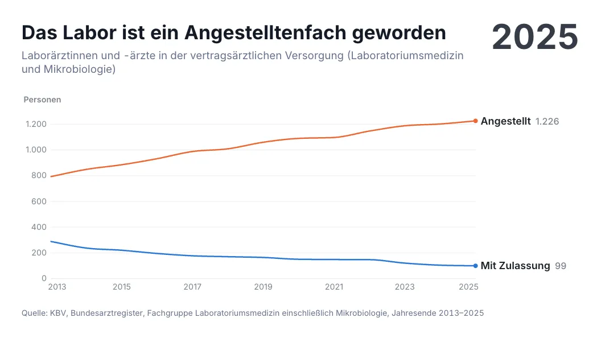
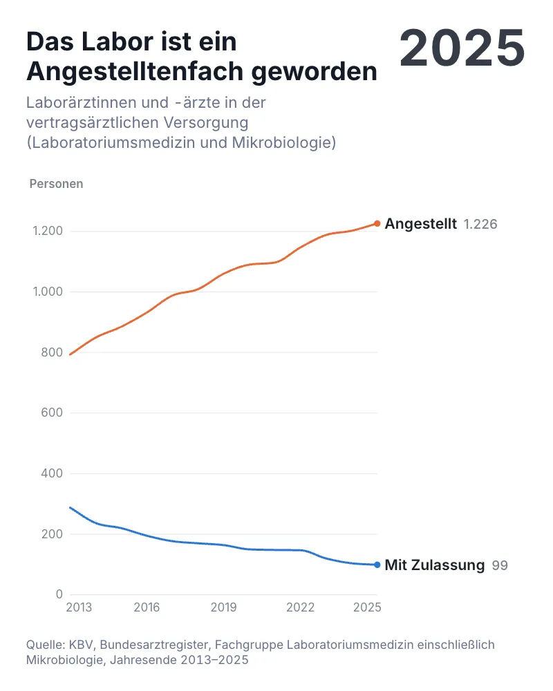

Laborärzte: 88,5 Prozent angestellt, kaum noch Praxen
Ende 2025 nahmen 1.386 Ärztinnen und Ärzte der Fachgruppe Laboratoriumsmedizin an der vertragsärztlichen Versorgung teil, laut Bundesarztregister der Kassenärztlichen Bundesvereinigung (KBV). 1.226 davon waren in MVZ und anderen Einrichtungen angestellt, 88,5 Prozent; 2013 waren es 68,0 Prozent. Mit eigener Zulassung arbeiteten 2013 noch 288 Laborärztinnen und -ärzte, Ende 2025 99.


Das Wichtigste in Kürze
- Angestellt im MVZ: 793 (2013) auf 1.226 (2025) angestellt in Einrichtungen, davon 1.224 in MVZ.
- Zulassung: 288 auf 99, minus 65,6 Prozent. In Einzelpraxen arbeiten noch 35 Laborärztinnen und -ärzte mit Zulassung, 2013 waren es 92.
- Zweitquelle: Die Ärztestatistik der Bundesärztekammer zeigt dasselbe für Fachärztinnen und Fachärzte für Laboratoriumsmedizin im ambulanten Bereich: niedergelassen 337 auf 113, angestellt 329 auf 725.
- Größere Gruppen: Sonic Healthcare hat zum 01.07.2025 die LADR-Gruppe übernommen; die deutschen Labore des Konzerns setzten im Geschäftsjahr bis Juni 2026 2,73 Milliarden australische Dollar um.
Die Gegenseite der Praxissoftware ist ein Labor-MVZ
Wer eine Schnittstelle zwischen Praxis und Labor baut, verbindet heute nicht zwei Praxen, sondern eine Arztpraxis mit einem Labor-MVZ, das meist zu einer Laborgruppe gehört. Diese Labore stellen den Praxen eigene Systeme für den Laborauftrag bereit und werden dafür seit 2025 mit einer eigenen Pauschale vergütet (GOP 40092). Den Befund schicken sie als LDT-Datei zurück, die fast jede Praxissoftware einlesen kann.
Das passt dazu, dass der digitale Auftrag selten aus der Praxissoftware kommt: Die Gegenseite ist groß genug, um ihre eigene Software in die Praxen zu bringen. Wie die Zulassungen der Praxissysteme aussehen, steht in LDT-Befunde ja, Aufträge kaum.
Das Kassenhonorar der Labore
Die gesetzlichen Krankenkassen zahlten der Laboratoriumsmedizin im 1. Quartal 2013 314,5 Millionen Euro, im 4. Quartal 2019 413,1 Millionen. Mit den Corona-Tests verdoppelte sich das Quartalshonorar fast, auf 813 Millionen Euro im 1. Quartal 2022. Seit dem 2. Quartal 2022 liegt es zwischen 520 und 578 Millionen, im 3. Quartal 2024 bei 553,2 Millionen (KBV-Honorarbericht). Die Spitzen fallen mit den Abrechnungen der PCR-Tests zusammen.
Was die Zahl nicht sagt
- Personen, keine Labore. Wie viele Laborpraxen und Labor-MVZ es gibt, veröffentlicht keine Statistik. Auch Marktanteile der Laborgruppen lassen sich nicht ehrlich rechnen: Die Umsätze enthalten Privat- und Krankenhausleistungen, sind in verschiedenen Währungen und Geschäftsjahren angegeben, und für die meisten Gruppen fehlen sie.
- Fachgruppe einschließlich Mikrobiologie. Das Bundesarztregister fasst Laboratoriumsmedizin und Mikrobiologie zusammen. Die Bundesärztekammer zählt den Facharzt für Laboratoriumsmedizin allein.
- Die Zweitquelle hat einen Sprung. In der Ärztestatistik sinkt die Zahl der niedergelassenen Laborärzte von 2021 auf 2022 von 220 auf 150; im Bundesarztregister gibt es diesen Sprung nicht. Deshalb zeigt die Grafik nur das Bundesarztregister.
- Nicht im Bild: Ermächtigte, Angestellte in Praxen und Jobsharing, 2025 zusammen 61 Personen.
Gerechnet
Alle Werte der Grafik sind belegt. Gerechnet sind die Anteile (angestellt an allen, Rückgang der Zulassungen) und die Zahl der Laborärztinnen und -ärzte mit Zulassung in Einzelpraxen, summiert aus Tabelle 5 des Bundesarztregisters (mit und ohne angestellte Ärzte). Der Umsatz von Sonic ist ein veröffentlichter Wert, gerundet. Die Quartalshonorare stehen so im Honorarbericht der KBV, auf 0,1 Millionen Euro gerundet.
Quelle und Methode
Kassenärztliche Bundesvereinigung, Honorarbericht (Quartale 1/2013–3/2024) und Statistische Informationen aus dem Bundesarztregister, Stände 31.12.2013 bis 31.12.2025, Tabellen 1.0, 5 und 9; Bundesärztekammer, Ärztestatistik, Tabelle 3, 2013 bis 2025 (ältere Jahrgänge über das Webarchiv); Sonic Healthcare, Financial and Operational Review, Geschäftsjahr bis 30.06.2026. Abgerufen am 22. Oktober 2026. Wie MVZ insgesamt wachsen, zeigt MVZ wachsen, ärztliche Einzelpraxen schrumpfen.
Häufige Fragen
Sind Laborärzte angestellt oder selbstständig?
In der Kassenversorgung überwiegend angestellt: Ende 2025 88,5 Prozent, fast alle in MVZ. Mit eigener Zulassung arbeiten noch 99 Laborärztinnen und -ärzte.
Wie viele Laborärzte gibt es in Deutschland?
In der vertragsärztlichen Versorgung 1.386 (Fachgruppe Laboratoriumsmedizin einschließlich Mikrobiologie, Ende 2025). Laut Bundesärztekammer waren 2025 1.252 Fachärztinnen und Fachärzte für Laboratoriumsmedizin berufstätig, 838 davon ambulant.
Wie viele Labore gibt es?
Das zählt keine amtliche Statistik. Der Branchenverband ALM nennt auf seiner Website 20 Laborgruppen als Mitglieder, darunter Sonic Healthcare, SYNLAB, Limbach, amedes und LADR.